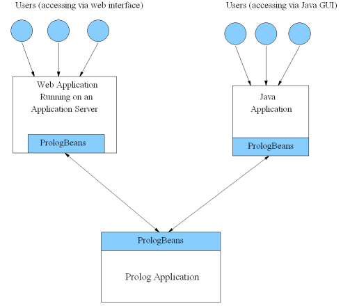

PrologBeans is a package for integrating Java and Prolog applications. The main idea is to let Java and Prolog run in separate processes. It is usually a bad idea to let Java and Prolog coexist in the same process, as their respective virtual machines tend to compete over resources such as memory and UNIX signals.
The current version of the package is designed to be used when Java
applications need to send queries to a Prolog server (and less intended
for showing a GUI from a Prolog program). One typical application is to
connect Java based web applications to a Prolog server (see examples
later).
 PrologBeans setup where the Prolog application serves several users accessing both via a web application server and a Java GUI.
The PrologBeans package is split into the file prologbeans.jar,
to be used in the Java application, and the
library(prologbeans) module, to be used in the Prolog part of
the application, i.e. the Prolog server.
All PrologBeans examples can be found in the
qplib('prologbeans/demo') directory, which is one of the
directories covered by the demo file search path.